Module 12 — Maintenance d’un système en production¶
La transcription du support Drive et l’aide pédagogique sont séparées pour rendre leur provenance explicite.
SOURCE DRIVE · TRANSCRIPTION DU SUPPORT
Le contenu des documents du dossier TSSR est transcrit ci-dessous, page par page. Les textes et tableaux sont intégrés à la page Web. Aucun fichier PDF, aucune diapositive entière ni aucune reproduction de page n’est affiché. Seuls des croquis ou visuels isolés et vérifiés peuvent accompagner la transcription. Les versions et les consignes restent celles des supports de formation. Les compléments IA sont conservés dans leur onglet distinct.
Support · RES24_0050B - M12 - Linux Administration (Debian) · 52 pages transcrites
Administration Debian
GNU/Linux
Module 12 – Maintenance d’un système en production
Maintenance d’un système en production
Objectifs
- Analyser le système
- Gérer les journaux
- Planifier des tâches
- Gérer les fichiers de logs
Maintenance d’un système en production
Analyser le système
Nécessité d’analyser son système
- Il est important d’analyser son système d’exploitation pour vérifier que tout fonctionne correctement. Il y a des deux types d’outils permettant cette analyse : les outils proactifs et réactifs.
- Afin d’analyser facilement son système, il est utile de lire les journaux du système (les logs).
- Afin de préserver un bon fonctionnement, il est utile d’automatiser des tâches administratives.
- Enfin, il est important de connaître des commandes de prise d’informations du système, la RAM, le CPU, les processus, etc.
Gestion des journaux système et applicatif
La gestion des journaux applicatifs est gérée sous Debian 9 par deux services :
- Journald au travers de systemd
- L’ancien système rsyslog au travers de journald
Journald au travers de Systemd
- Tous les services, programmes, tâches gérées par systemd ont leurs comportements remontés dans journald.
- Le fait d’exécuter la commande systemctl status [daemon] affiche le statut du service mais aussi les logs de l’application.
- Ces logs sont enregistrés dans une base de données gérée par journald.
Maintenance d'un système en production
La commande Journalctl
Journald au travers de Systemd
root@deb:~$ systemctl status sshd.service
● ssh.service - OpenBSD Secure Shell server
Loaded: loaded (/lib/systemd/system/ssh.service; enabled; vendor preset: enabled)
Active: active (running) since Thu 2021-06-03 14:22:07 CEST; 6 days ago
Docs: man:sshd(8)
man:sshd_config(5)
Process: 614 ExecStartPre=/usr/sbin/sshd -t (code=exited, status=0/SUCCESS)
Main PID: 621 (sshd)
Tasks: 1 (limit: 2315)
Memory: 3.8M
CGroup: /system.slice/ssh.service
└─621 /usr/sbin/sshd -Djuin 09 15:35:20 client-linux sshd[5154]: Accepted password for jdoe from 172.19.11.13
port 61644 ssh2
juin 09 15:35:20 client-linux sshd[5154]: pam_unix(sshd:session): session opened for
user jdoe by (uid=0)Regarder les logs complets de chaque service
- Puisque journald stocke les informations dans une base de données, il est possible de regarder les logs complets de chaque service via la commande journalctl.
- Le fichier de configuration de journald est /etc/systemd/journald.conf
root@deb:~$ journalctl
- Logs begin at Thu 2021-06-03 14:22:04 CEST, end at Wed 2021-06-09 15:41:22 CEST. -
juin 03 14:22:04 client-linux kernel: Linux version 4.19.0-16-amd64 (debian-
kernel@lists.debian.org) (gcc version 8.3.0 (Debian 8.3.0-6)) #1 SMP D
juin 03 14:22:04 client-linux kernel: Command line: BOOT_IMAGE=/vmlinuz-4.19.0-16-amd64
root=/dev/mapper/client--linux--vg-root ro quiet
juin 03 14:22:04 client-linux kernel: Disabled fast string operations
[...]
juin 09 15:41:22 client-linux anacron[4086]: Job `cron.weekly' terminated
juin 09 15:41:22 client-linux anacron[4086]: Normal exit (2 jobs run)
juin 09 15:41:22 client-linux systemd[1]: anacron.service: Succeeded.
lines 4792-4839/4839 (END)Visualiser les logs en temps réel
Il est possible de visualiser les logs en temps réel avec l’option -f
root@deb:~$ journalctl -f
-- Logs begin at Thu 2021-06-03 14:22:04 CEST. --
juin 09 15:36:22 client-linux cracklib[5204]: no dictionary update necessary.
juin 09 15:36:23 client-linux anacron[4086]: Job `cron.daily' terminated
juin 09 15:36:45 client-linux PackageKit[4305]: daemon quit
juin 09 15:36:45 client-linux systemd[1]: packagekit.service: Main process exited,
code=killed, status=15/TERM
juin 09 15:36:45 client-linux systemd[1]: packagekit.service: Succeeded.
juin 09 15:41:22 client-linux anacron[4086]: Job `cron.weekly' started
juin 09 15:41:22 client-linux anacron[5274]: Updated timestamp for job `cron.weekly' to
2021-06-09
juin 09 15:41:22 client-linux anacron[4086]: Job `cron.weekly' terminated
juin 09 15:41:22 client-linux anacron[4086]: Normal exit (2 jobs run)
juin 09 15:41:22 client-linux systemd[1]: anacron.service: Succeeded.Voir les logs d’un service donné
journalctl -u [service]root@deb:~$ journalctl –u cron
-- Logs begin at Thu 2021-06-03 14:22:04 CEST, end at Wed 2021-06-09 15:41:22 CEST. --
juin 03 14:22:06 client-linux systemd[1]: Started Regular background program processing
daemon.
juin 03 14:22:06 client-linux cron[529]: (CRON) INFO (pidfile fd = 3)
juin 03 14:22:07 client-linux cron[529]: (CRON) INFO (Running @reboot jobs)
juin 03 14:30:01 client-linux CRON[1337]: pam_unix(cron:session): session opened for user root
by (uid=0)
juin 03 14:30:01 client-linux CRON[1338]: (root) CMD ([ -x /etc/init.d/anacron ] && if [ ! -d
/run/systemd/system ]; then /usr/sbin/invoke-rc.d an
juin 03 14:30:01 client-linux CRON[1337]: pam_unix(cron:session): session closed for user root
[...]Voir les logs d’un PID donné
journalctl _PID=[n° pid]root@deb:~$ journalctl _PID=1
-- Logs begin at Sun 2019-04-21 07:14:36 CEST, end at Thu 2019-05-09 13:24:52 CEST. --
avril 21 08:01:38 debian systemd[1]: Started Run anacron jobs.
avril 21 08:01:38 debian systemd[1]: anacron.timer: Adding 2min 48.679199s random time.
avril 21 08:53:38 debian systemd[1]: Starting Daily apt download activities...
avril 21 08:53:45 debian systemd[1]: Started Daily apt download activities.
avril 21 08:53:45 debian systemd[1]: apt-daily.timer: Adding 10h 23.576305s random time.Voir les logs d’un programme
journalctl /usr/sbin/sshdroot@deb:~$ journalctl /usr/sbin/sshd
-- Logs begin at Thu 2021-06-03 14:22:04 CEST, end at Wed 2021-06-09 16:32:19 CEST. --
juin 03 14:22:07 client-linux sshd[621]: Server listening on 0.0.0.0 port 22.
juin 03 14:22:07 client-linux sshd[621]: Server listening on :: port 22.
juin 09 15:35:20 client-linux sshd[5154]: Accepted password for jdoe from 172.19.11.13 port
61644 ssh2
juin 09 15:35:20 client-linux sshd[5154]: pam_unix(sshd:session): session opened for user jdoe
by (uid=0)Voir les logs par niveau de priorité
journalctl –p <level>root@deb:~$ journalctl -p err
-- Logs begin at Thu 2021-06-03 14:22:04 CEST, end at Wed 2021-06-09 16:32:19 CEST. --
juin 03 14:22:07 client-linux kernel: sd 3:0:0:0: [sdc] No Caching mode page found
juin 03 14:22:07 client-linux kernel: sd 3:0:0:0: [sdc] Assuming drive cache: write through
juin 09 15:35:20 client-linux gdm-password][18939]: pam_unix(gdm-password:auth): conversation
failed
juin 09 15:35:20 client-linux
gdm-password][18939]: pam_unix(gdm-password:auth): auth could
not identify password for [jdoe]Les différents niveaux de priorités sont du plus critique au plus informatif : emerg, alert, crit, err, warning, notice, info, debug.
Cumuler les options
Il est possible de cumuler les options, par exemple :
root@deb:~$ journalctl -f /usr/sbin/sshd -p info
-- Logs begin at Thu 2021-06-03 14:22:04 CEST, end at Wed 2021-06-09 16:32:19 CEST. --
mai 06 09:56:48 debian sshd[18901]: Accepted password for jdoe from 10.9.121.13 port
60042 ssh2
mai 06 09:56:48 debian sshd[18901]: pam_unix(sshd:session): session opened for user
jdoe by
(uid=0)mai 06 15:48:06 debian sshd[18901]: pam_unix(sshd:session): session closed for user
jdoeMaintenance d'un système en production
rsyslog à travers Journald
Généralité
- Journald a certes l’avantage de stocker les logs dans une base de données mais ces logs sont uniquement conservés pour le démarrage en cours.
- Pour conserver les logs, Debian utilise rsyslog.
- Tous les logs de journalctl sont transférés à rsyslog.
Principe de fonctionnement
- rsyslog travaille sur des « facilities » et des niveaux de priorités qui déclenchent une action.
- Les facilities les plus courantes sont :
- auth : utilisée pour des évènements concernant la sécurité ou l'authentification à travers des applications d'accès (type SSH)
- authpriv : utilisée pour les messages relatifs au contrôle d'accès
- daemon : utilisée par les différents processus systèmes et d'application
- kern : utilisée pour les messages concernant le noyau
Principe de fonctionnement
- mail : utilisée pour les évènements des services mail
- user : facility par défaut quand aucune n'est spécifiée
- local0 à local7 : utilisées pour les messages de différents programmes
- * : désigne toutes les facilities
- none : désigne aucune facility
Principe de fonctionnement
Les différents niveaux de priorité sont :
- emerg : urgence, système inutilisable
- alert : alerte, intervention immédiate nécessaire
- crit : erreur système critique
- err : erreur de fonctionnement
- warning : avertissement
- notice : évènements normaux devant être signalés
- info : pour information
- debug : message de débogage
Principe de fonctionnement
- Les actions correspondent généralement à l’écriture du journal dans un fichier, mais il est possible de configurer rsyslog pour qu’il envoie les messages à enregistrer vers un autre serveur rsyslog.
- Exemple de configuration des règles dans le fichier /etc/rsyslog.conf :
auth,authpriv.*
/var/log/auth.log
*.*;auth,authpriv.none -/var/log/syslog
#cron.*
/var/log/cron.log
daemon.* -/var/log/daemon.log
kern.* -/var/log/kern.log- Le « - » devant certains chemins indique que l’enregistrement des logs est asynchrone.
Commande d'interaction
- Il est possible de faire des tests ou créer des scripts qui interagissent avec journald et rsyslog via la commande logger.
logger <option> [message]- Par exemple, pour envoyer un message cron de niveau info :
root@deb:~$ logger -p cron.info Message de testRsyslog à travers Journald
Démo
Gestion des journaux
Rsyslog à travers Journald
TP
Démo
Gestion de la journalisation
Maintenance d’un système en production
Planification des tâches
Planification utilisateur
crontab –eAu premier lancement de la commande, Debian vous proposera de choisir l’éditeur de texte a utiliser :
no crontab for root - using an empty oneSelect an editor. To change later, run 'select-editor'.
1. /bin/nano <---- easiest
2. /usr/bin/vim.basic <---- the best
3. /usr/bin/vim.tiny
Choose 1-3 [1]: 2Planification utilisateur
Le fichier crontab est composé de six colonnes :
- Minute : de 0 à 59
- Heure : de 0 à 23
- Jour du mois : de 1 à 31
- Mois : de 1 à 12
- Jour de la semaine : de 0 à 7 (sachant que 0 et 7 représentent dimanche)
- Commande : la commande à exécuter suivant la planification (il est conseillé d’utiliser un script pour des raisons de simplification de suivi des actions).
Planification utilisateur
Il est possible de formater les cinq premières colonnes :
- Avec des listes, en utilisant le caractère « , » :
- Ex. : 1,3,5 dans la colonne des jours de la semaine génèrent une tâche tous les lundis, mercredis et vendredis
- Avec des intervalles, en utilisant « - » :
- Ex. : 10-20 dans la colonne jours du mois génère une tâche exécutée du 10 au 20
- Avec un joker, en utilisant « * » :
- Ex. : * dans la colonne des heures indique toutes les heures
- Mettre un répétiteur, en utilisant « / » :
- Ex : */2 dans la colonne des mois génère une tâche exécutée en janvier, mars, mai, juillet, septembre, novembre
Planification utilisateur
Exemple de configuration
0 5 * * 1 /opt/bin/backup.shTâche exécutée chaque lundi matin à 5h00 durant toute l'année, quel que soit le mois
Maintenance d’un système en production
Planification système
Planification système
- Cron utilise aussi une table spéciale pour les tâches de planification du système.
- Ces tâches sont déclarées dans le fichier /etc/crontab.
SHELL=/bin/sh
PATH=/usr/local/sbin:/usr/local/bin:/sbin:/bin:/usr/sbin:/usr/bin
# m h dom mon dow user command
17 * * * * root cd / && run-parts --report /etc/cron.hourly
25 6 * * * root test -x /usr/sbin/anacron || ( cd / && run-parts --report
/etc/cron.daily )
47 6 * * 7 root test -x /usr/sbin/anacron || ( cd / && run-parts --report
/etc/cron.weekly)
52 6 1 * * root test -x /usr/sbin/anacron || ( cd / && run-parts --report
/etc/cron.monthly)Lancement des tâches non exécutées avec anacron
- Pour comprendre le fonctionnement d’anacron, l’explication suivante va s’appuyer sur le travail : cron.daily
- Tous les jours, si le système reste allumé 24h/24, cron va exécuter cette tâche à 6h25 :
25 6 * * * root cd / && run-parts --report /etc/cron.daily- Cette tâche a pour effet de lancer tous les scripts présents dans le répertoire /etc/cron.daily.
- En regardant dans ce répertoire, on voit qu’il y a un fichier 0anacron. Ce script exécute une simple commande qui est :
anacron –u cron.dailyPlanification des tâches
Démo
Planification de tâches
Planification des tâches
TP
Démo
Gestion de la planification des
tâches
Maintenance d’un système en production
Gestion de la taille des fichiers
de log
Taille des logs avec Journald
- Nativement journald stocke ses logs dans une base de données volatile dans /run/log/journal.
- Mais il est possible de demander à journald de garder les logs de façon durable.
- Dans le fichier de configuration de journald /etc/systemd/journald.conf, le paramètre #Storage=auto est commenté, donc journald utilise sa valeur par défaut qui est auto.
- Le fait de créer un répertoire /var/log/journal rendra la conservation des logs durable.
- La taille de la base de données peut vite devenir conséquente sur un système fortement utilisé.
Taille des logs avec Journald
- Par défaut, journald utilisera un maximum de 10% du système de fichier hébergeant /var/log/journald.
- Il est possible de définir la taille maximum utilisée sur le système de fichier de la base de données avec le paramètre SystemMaxUse=. De plus, il est possible de dire que la base de données sera subdivisée en plusieurs fichiers de taille fixe avec le paramètre SystemMaxFileSize=.
- Bien évidement si la décision est prise de garder les logs de journald de façon définitive, il sera peut-être intéressant de stopper rsyslog afin d’éviter les doublons d’information.
root@deb:~$ systemctl disable rsyslogTaille des logs avec Logrotate
- Logrotate est un programme exécuté par une tâche cron système tous les jours (et bien sûr géré aussi par anacron) présente dans /etc/cron.daily/logrotate.
- Le fichier de configuration principal /etc/logrotate.conf définit des valeurs de comportement par défaut.
/var/log/squid/access.log {
daily
compress
delaycompress
rotate 366
create 640
}Exemple de configuration
Maintenance d’un système en production
Outils d'analyse du système
Prise d'informations sur le système
- Connaître la version du système
root@deb:~$ cat /etc/debian_version
10.9- Connaître la version du noyau Linux actif et son architecture
root@deb:~$ uname -a
Linux deb 5.2.0-8-amd64 #1 SMP Debian 5.2.0-8.1
(2021-05-19) x86_64 GNU/LinuxPrise d'informations sur le système
Connaître le type de CPU
root@deb:~$ lscpu
Architecture : x86_64
Mode(s) opératoire(s) des processeurs : 32-bit, 64-bit
Boutisme : Little Endian
Processeur(s) : 1
Liste de processeur(s) en ligne : 0
Thread(s) par cœur : 1
Cœur(s) par socket : 1
[…]
Famille de processeur : 6
Modèle : 42
Nom de modèle : Intel(R) Core(TM) i5-2500 CPU @ 3.30GHz
[…]Prise d'informations sur le système
Lister les informations des matériels PCI
root@deb:~$ lspci
00:00.0 Host bridge: Intel Corporation 440BX/ZX - 82443 Host bridge (rev 01)
00:01.0 PCI bridge: Intel Corporation 440BX/ZX – 82443 AGP bridge (rev 01)
00:07.0 ISA bridge: Intel Corporation 82371AB/EB/MB PIIX4 ISA (rev 08)
00:07.1 IDE interface: Intel Corporation 82371AB/EB/MB PIIX4 IDE (rev 01)
00:07.3 Bridge: Intel Corporation 82371AB/EB/MB PIIX4 ACPI (rev 08)
00:07.7 System peripheral: VMware Virtual Machine Communication Int. (rev 10)
00:0f.0 VGA compatible controller: VMware SVGA II Adapter
00:10.0 SCSI storage controller: LSI Logic / Symbios Logic 53c1030 PCI-X Fusion-MPT
Dual Ultra320 SCSI (rev 01)
00:11.0 PCI bridge: VMware PCI bridge (rev 02)
00:15.0 PCI bridge: VMware PCI Express Root Port (rev 01)
00:15.1 PCI bridge: VMware PCI Express Root Port (rev 01)Prise d'informations sur le système
- Lister les périphériques USB
root@deb:~$ lsusb
Bus 002 Device 001: ID 1d6b:0002 Linux Foundation 2.0 root hub
Bus 001 Device 003: ID 0e0f:0002 VMware, Inc. Virtual USB Hub
Bus 001 Device 002: ID 0e0f:0003 VMware, Inc. Virtual Mouse
Bus 001 Device 001: ID 1d6b:0001 Linux Foundation 1.1 root hub- Lister les informations sur stockage et systèmes de fichiers (commande déjà vue dans les modules précédents)
fdisk ; pvs,vgs,lvs ; lsblk,blkid,findmnt,dfPrise d'informations sur le système
Lister les informations sur répertoires et fichiers
- La commande du permet de prendre des informations sur la taille utile d’un répertoire.
root@deb:~$ du –sh /root
76K
/root- La commande ls permet de prendre des informations sur les fichiers.
root@deb:~$ ls –lh fichier
-rw-r----- 1 jdoe informatique 79,4k 10:24 fichier- La commande file permet de connaître la nature d’un fichier.
root@deb:~$ file /vin/bash
/bin/bash: ELF 64-bit LSB pie executable, x86-64, version 1 (SYSV), dynamically
linked, interpreter /lib64/ld-linux-x86-64.so.2, for GNU/Linux 3.2.0,
BuildID[sha1]=ffe165dc8164aea2b05beda07aeda8ad71f1e7c, strippedPrise d'informations sur le système
La commande lsof permet de connaître l’activité des fichiers ouverts dans un répertoire donné.
root@deb:~$ lsof /root
lsof: WARNING: can't stat() fuse.gvfsd-fuse file system /run/user/1000/gvfs
Output information may be incomplete.
COMMAND
PID
USER FD TYPE DEVICE SIZE/OFF NODE
NAME
bash
2074
root cwd DIR 254,0 4096 781836
/root
bash
2179
root cwd DIR 254,0 4096
781836
/root
lsof
3826
root cwd DIR 254,0 4096
781836
/root
lsof
3827
root cwd DIR 254,0 4096
781836
/rootMaintenance d’un système en production
Performances et processus
Prise d'informations sur le système
Informations en temps réel avec top
top - 10:52:12 up 11:27, 3 users, load average: 0,00, 0,00, 0,00
Tasks: 193 total, 2 running, 191 sleeping, 0 stopped, 0 zombie
%Cpu(s): 1,0 us, 0,3 sy, 0,0 ni, 98,7 id, 0,0 wa, 0,0 hi, 0,0 si, 0,0 st
MiB Mem : 1970,9 total, 406,0 free, 848,2 used, 716,7 buff/cache
MiB Swap: 976,0 total, 976,0 free, 0,0 used. 938,3 avail Mem PID USER PR NI VIRT RES SHR S %CPU %MEM TIME+ COMMAND
5 root 20 0 0 0 0 I 0,3 0,0 0:41.44 kworker/0:0-
mm_percpu_wq
550 root 20 0 122940 12316 10708 S 0,3 0,6 0:45.42 vmtoolsd
2257 jdoe 20 0 2582664 295840 106080 S 0,3 14,7 11:46.09 gnome-shell
6155 jdoe 20 0 16972 5968 4844 S 0,3 0,3 0:00.04 sshd
6296 jdoe 20 0 11272 3728 3008 R 0,3 0,2 0:00.04 top
1 root 20 0 104324 10568 7852 S 0,0 0,5 0:03.68 systemd
2 root 20 0 0 0 0 S 0,0 0,0 0:00.00 kthreadd
3 root 0 -20 0 0 0 I 0,0 0,0 0:00.00 rcu_gp
Prise d'informations sur le système
Informations en temps réel avec htop (à installer)
Prise d'informations sur le système
Informations en temps réel avec glances (à installer)
Prise d'informations sur le système
- Lister des processus avec ps
root@deb:~$ ps -ef
[…]
jdoe 6155 6149 0 08:55 ? 00:00:00 sshd: jdoe@pts/2
jdoe 6156 6155 0 08:55 pts/2 00:00:00 -bash
root 6301 2 0 10:56 ? 00:00:00 [kworker/0:1-ata_sff]
root 6302 2 0 11:02 ? 00:00:00 [kworker/0:2-ata_sff]
jdoe 6309 6156 0 11:05 pts/2 00:00:00 ps -ef- Informations sur la ram avec free
root@deb:~$ free -h
total used free shared buff/cache available
Mem: 1,9Gi 802Mi 451Mi 23Mi 716Mi 983Mi
Swap: 975Mi 0B 975Mi2Performances et processus
Démo
Prise d’informations
Performances et processus
TP
Démo
Informations sur le système
Référence du document : 1XehoAashXbszF0_H8grwM3eVb8FwnQDT · SHA-256 a8c82659dc17c681…
Énoncé · M12TP01 - Enoncé - Gestion de la journalisation · 1 pages transcrites
Gestion de la journalisation
TP du Module 12 – Maintenance d’un système en production
Avant de démarrer ce TP, il convient d’avoir suivi les vidéos des modules 1 à 12 et d’avoir réalisé les TP proposés.
Durée estimée
30 à 45 minutes
Énoncé
I. Recherche d’informations : sur le serveur sans environnement graphique
- Trouver dans les journaux les différentes ouvertures de sessions
- Les reporter dans un fichier /adm/sessions.txt
- Rechercher dans les journaux des informations sur le disque sda, (dont le nombre de secteurs et la taille du disque)
II. Configuration de rsyslog
- Activer la journalisation pour le service cron
- Stocker les informations relatives au démon cron dans le fichier /adm/logs/cron.log
- Définir comme fichier contenant tous les évènements d'avertissement /adm/logs/warnings.log
III. Générer des messages de type avertissement
- A l’aide de logger, créer des messages de niveau avertissement.
- Vérifier le bon fonctionnement des étapes précédentes.
Solution
Une solution est proposée pour ce TP sous la forme d'un PDF commenté, disponible dans les ressources à télécharger.
Référence du document : 1dNyNL2fgTVx2I8D8O_nyrH7d0f79Gv-Y · SHA-256 9de609bcdec75e71…
Énoncé · M12TP02 - Enoncé - Gestion de la planification des tâches · 1 pages transcrites
Gestion de la planification des tâches
TP du Module 12 – Maintenance d’un système en production
Avant de démarrer ce TP, il convient d’avoir suivi les vidéos des modules 1 à 12 et d’avoir réalisé les TP proposés.
Durée estimée
30 à 45 minutes
Énoncé : Planification de taches sur le serveur sans environnement graphique
I. Crontab utilisateur
- Créer une tâche crontab utilisateur pour l'utilisateur "François"
- Périodicité : tous les jours ouvrables de la semaine à 9h15
- Commande : mise à jour de l’archive de son répertoire personnel dans l’arborescence depot de l’atelier 10 avec le nom francois.tar
- Créer une tâche crontab utilisateur pour l’utilisateur "François"
- Périodicité : tous les samedis à 10h
- Commande : compression de l’archive francois.tar en francois.tar.bz2, puis création d’une nouvelle archive francois.tar
II. Crontab système
- Créer une tâche de surveillance des processus système :
- Périodicité : toutes les 30 minutes le mardi
- Commande : lister l'ensemble des processus de manière détaillée avec notamment les pourcentages d'utilisation mémoire et processeur.
- Enregistrer ces informations de façon durable dans le fichier /var/log/procstatus.log
Solution
Une solution est proposée pour ce TP sous la forme d'un PDF commenté, disponible dans les ressources à télécharger.
Référence du document : 1dUe09sTd-yM3OMt7m-7Bsjff47qrr4Ej · SHA-256 37f92fcb9acc9c91…
Énoncé · M12TP03 - Enoncé - Informations sur le système · 2 pages transcrites
Informations sur le système
TP du Module 12 – Maintenance d'un système en production
Avant de démarrer ce TP, il convient d’avoir suivi les vidéos des modules 1 à 12 et d’avoir réalisé les TP proposés.
Durée estimée
20 à 45 minutes
Énoncé
I. Relevé d’informations : sur le serveur sans environnement graphique
- Afficher les informations sur la mémoire
- Combien de mémoire RAM est utilisée ?
- Combien de mémoire SWAP est utilisée ?
- Combien de mémoire RAM est réellement libre ?
- Afficher les informations détaillées sur le processeur et la mémoire
- Quel type de processeur a été détecté ?
- Afficher tous les processus relatifs à des démons (dont le nom finit par un "d")
- Afficher leur nombre
II. Intervention sur les processus
- Ouvrez une session SSH avec le login utilisateur (pas le compte root)
- Lister tous les processus relatifs à votre login de façon détaillée
- Lister dans un fichier tous les processus correspondant aux connexions Putty
- Arrêter un processus lancé
- Lancer une seconde session Putty et ouvrir une session avec votre login utilisateur
- Repérer le n° de processus (PID) relatif au shell de cette seconde session Putty
- Depuis votre 1ere session, tenter d'arrêter votre second shell (avec le signal par défaut)
- Depuis votre 1ere session, arrêter définitivement votre second shell (avec le signal adapté)
Solution
Une solution est proposée pour ce TP sous la forme d'un PDF commenté, disponible dans les ressources à télécharger.
Référence du document : 1tesYXuD9sFegjVQodQFKOR8yPm49V6x3 · SHA-256 73ba89bc755c4d88…
Correction · M12TP01 - Solution - Gestion de la journalisation · 3 pages transcrites
Correction originale : à consulter après avoir tenté l’exercice.
Gestion de la journalisation
TP du Module 12 – Maintenance d’un système en production
Avant de démarrer ce TP, il convient d’avoir suivi les vidéos des modules 1 à 12 et d’avoir réalisé les TP proposés.
Durée estimée
30 à 45 minutes
Énoncé
I. Recherche d’informations : sur le serveur sans environnement graphique
- Trouver dans les journaux les différentes ouvertures de sessions
Dans le dossier des journaux, /var/log, la commande ls -lrt permet d’afficher les derniers fichiers utilisés
Remarquons le fichier auth.log. Il contient bien des informations concernant les ouvertures de sessions
Dans ce fichier, en filtrant sur le mot "opened", je récupère des ouvertures de sessions pour les utilisateurs ex : login de l'utilisateur root en première ligne. Mais il s'y trouve aussi des informations de services comme cron.
En ajoutant un grep -v CRON, nous filtrons les résultats en ne retenant pas ce motif.

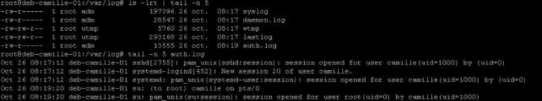

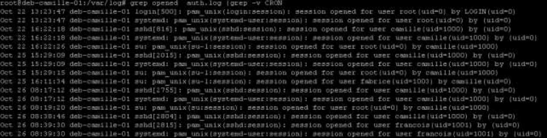

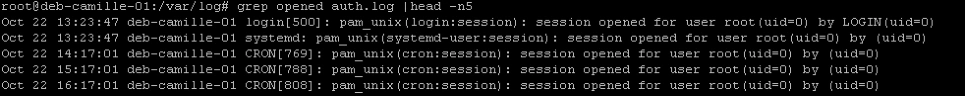
Transcription des commandes et informations utiles visibles
grep opened auth.log | grep -v CRON- Les reporter dans un fichier /adm/sessions.txt
Il ne reste plus qu'à rediriger ce résultat dans /adm/sessions.txt, en ayant pris soin de créer le dossier au préalable.
- Rechercher dans les journaux des informations sur le disque sda, (dont le nombre de secteurs et la taille du disque)
Un appel à la commande journalctl suivie d'un grep filtrant le résultat sur sda nous renvoie ces résultats.
On trouve sur la première ligne l'information du nombre de secteurs du disque et de sa taille globale
En bonus, il est possible de filtrer ces résultats en précisant l'option --dmesg qui va limiter les résultats aux logs du noyau.
II. Configuration de rsyslog
- Activer la journalisation pour le service cron
Dans le fichier /etc/rsyslog.conf , décommenter la ligne concernant la facility cron.
Ne pas oublier de redémarrer le service

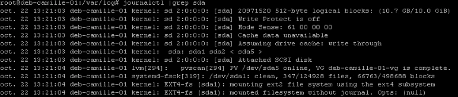

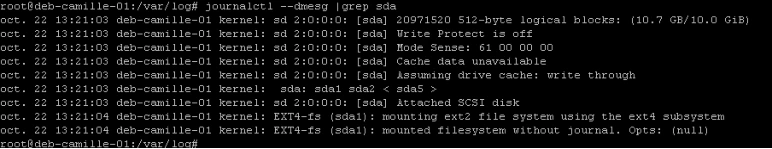

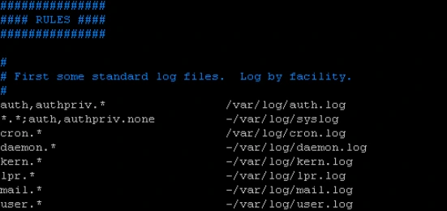

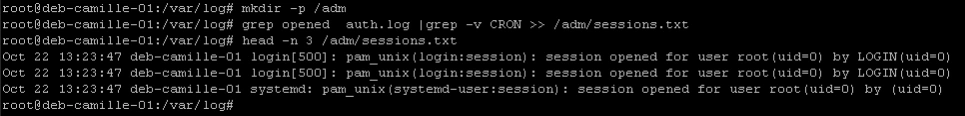
Transcription des commandes et informations utiles visibles
mkdir -p /adm
grep opened auth.log | grep -v CRON > /adm/sessions.txt
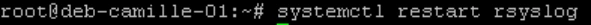
Transcription des commandes visibles
systemctl restart rsyslog- Stocker les informations relatives au démon cron dans le fichier /adm/logs/cron.log
Dans le fichier rsyslog.conf modifier le chemin du fichier réceptacle des logs.
Création du dossier qui devra recevoir ce fichier.
Ne pas oublier de redémarrer le service
- Définir comme fichier contenant tous les évènements d'avertissement /adm/logs/warnings.log
Dans le fichier rsyslog.conf ajouter cette ligne pour récupérer tous les fichiers utilisantlal priorité warn
Ne pas oublier de redémarrer le service
III. Générer des messages de type avertissement
- A l’aide de logger, créer des messages de niveau avertissement.
La commande logger permet d'envoyer un message test. Ici on utilise la facility kern et la priorité warn
- Vérifier le bon fonctionnement des étapes précédentes.
Création de deux messages tests pour la facility cron, avec des priorités warning et info. Le premier message apparait dans les deux logs (validation de warning et validation de cron)
Le second message de priorité info n'apprait que dans la log de cron.

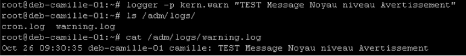
Transcription des commandes et informations utiles visibles
logger -p kern.warn "TEST Message Noyau niveau Avertissement"
ls /adm/logs/
cat /adm/logs/warning.log
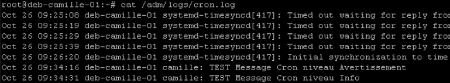

Transcription des commandes et informations utiles visibles
cron.* /adm/logs/cron.log
Transcription des commandes et informations utiles visibles
mkdir /adm/logs
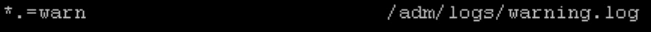
Transcription des commandes et informations utiles visibles
*.warn /adm/logs/warning.log
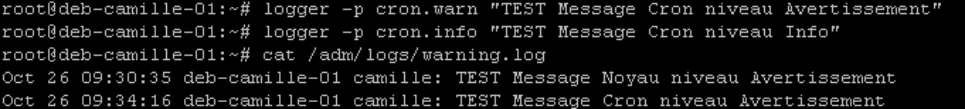
Transcription des commandes et informations utiles visibles
logger -p cron.warn "TEST Message Cron niveau Avertissement"
logger -p cron.info "TEST Message Cron niveau Info"
cat /adm/logs/warning.log
Transcription des commandes visibles
systemctl restart rsyslog
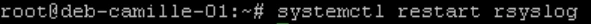
Transcription des commandes visibles
systemctl restart rsyslogRéférence du document : 1ZASpdyAucFZwKX3gWc0ooEmdZXKjGUcs · SHA-256 007acbf389de4f7f…
Correction · M12TP02 - Solution - Gestion de la planification des tâches · 2 pages transcrites
Correction originale : à consulter après avoir tenté l’exercice.
Gestion de la planification des tâches
TP du Module 12 – Maintenance d’un système en production
Avant de démarrer ce TP, il convient d’avoir suivi les vidéos des modules 1 à 12 et d’avoir réalisé les TP proposés.
Durée estimée
30 à 45 minutes
Énoncé : Planification de taches sur le serveur sans environnement graphique
I. Crontab utilisateur
- Créer une tâche crontab utilisateur pour l'utilisateur "François"
Au premier lancement choisir vim.basic
- Périodicité : tous les jours ouvrables de la semaine à 9h15
- Commande : mise à jour de l’archive de son répertoire personnel dans l’arborescence depot de l’atelier 10 avec le nom francois.tar
À la 15eme minute de la 9eme heure, tous les jours du mois, tous les mois, du 1er au 5eme jour de la semaine
Se déplacer à la racine (tar en mode update) puis lancer la commande de mise à jour de l'archive
- Créer une tâche crontab utilisateur pour l’utilisateur "François"
- Périodicité : tous les samedis à 10h
- Commande : compression de l’archive francois.tar en francois.tar.bz2, puis création d’une nouvelle archive francois.tar
À la 1ère minute de la 10eme heure, le 6eme jour de la semaine, compresser l'archive et créer une nouvelle archive hebdomadaire.

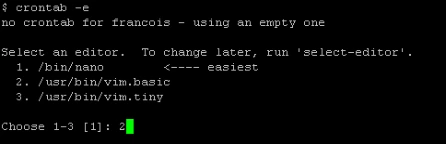
Transcription des commandes et informations utiles visibles
crontab -e
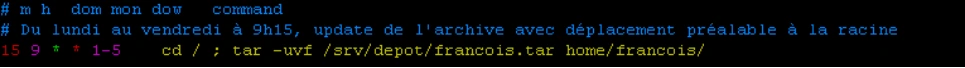
Transcription des commandes et informations utiles visibles
15 9 * * 1-5 cd /; tar -uvf /srv/depot/francois.tar home/francois/
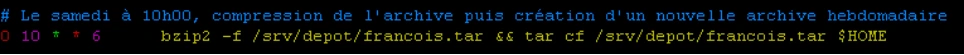
Transcription des commandes et informations utiles visibles
0 10 * * 6 bzip2 -f /srv/depot/francois.tar && tar cf /srv/depot/francois.tar $HOMEII. Crontab système
- Créer une tâche de surveillance des processus système :
- Périodicité : toutes les 30 minutes le mardi
- Commande : lister l'ensemble des processus de manière détaillée avec notamment les pourcentages d'utilisation mémoire et processeur.
- Enregistrer ces informations de façon durable dans le fichier /var/log/procstatus.log vi /etc/crontab, ajout d'une ligne pour lancer toutes les 30 minutes, le 2eme jour, une commande ps faux.
La commande date permet de dénombrer et d'horodater les diverses occurences.
Détail de résultats après une première occurence sur le serveur.

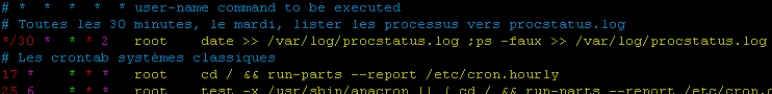

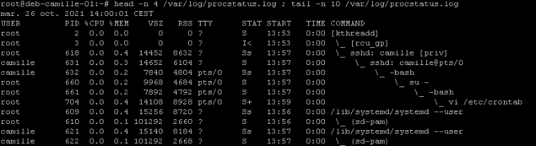
Référence du document : 1UciYH8m1mVuj_qUby0LU5oQhtODIZTtO · SHA-256 70efaeedb102f918…
Correction · M12TP03 - Solution - Informations sur le système · 4 pages transcrites
Correction originale : à consulter après avoir tenté l’exercice.
Informations sur le système
TP du Module 12 – Maintenance d'un système en production
Avant de démarrer ce TP, il convient d’avoir suivi les vidéos des modules 1 à 12 et d’avoir réalisé les TP proposés.
Durée estimée
20 à 45 minutes
Énoncé
I. Relevé d’informations : sur le serveur sans environnement graphique
- Afficher les informations sur la mémoire
- Combien de mémoire RAM est utilisée ?
- Combien de mémoire SWAP est utilisée ?
- Combien de mémoire RAM est réellement libre ?
117 MO de ram sont ici utilisés. 975 MO de swap le sont également (mais partagé). Ici pour connaitre la totalité de la ram disponible, il faut additionner la valeur de la colonne libre avec la valeur de la colonne tamp/cache (utilisation système pour améliorer les performances, libérable si besoin)
- Afficher les informations détaillées sur le processeur et la mémoire lscpu donne de nombreuses informations sur les processeurs

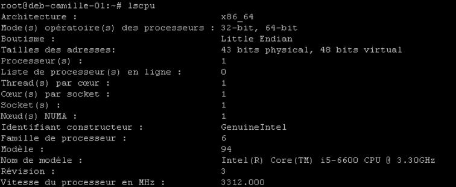

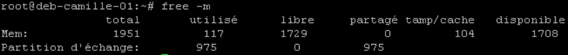
Transcription des commandes et informations utiles visibles
free -m
total used free shared buff/cache disponible
Mem: 1951 117 1729 0 104 1708
Partition d’échange: 975 0 975Lsmemavec l'option -a donne des informations complète sur la mémoire
- Quel type de processeur a été détecté ?
- Afficher tous les processus relatifs à des démons (dont le nom finit par un "d") ps -ef permet de lister tous les processus. grep avec l'option -e répétée permet de donner plusieurs informations de filtre (fonction logique OU)
-e 'd ' valide la lettre d suivi d'un espace ; -e 'd$' valide la lettre suivie du caractère fin de ligne.
A noter la dernière grep qui est ici un "faux positif" de la sortie Alternatives :
- Meilleure commande compacte et sûre (compte des processus dont le nom se termine par d) : ps -eo comm --no-headers | awk '/d$/ {count++} END{print count+0}'
- Si vous voulez aussi PID et utilisateur (plus utile pour un TP) : ps -eo pid,user,comm --no-headers | awk '3 /d/ {print $0}'
- Si vous tenez à wc -l mais sans faux positifs : ps -eo comm --no-headers | grep -E 'd$' | wc -l
- Afficher leur nombre
Reprenant la ligne précédent, on ajout un grep -v grep pour supprimer le "faux positif"
Puis on compte le tout avec la commande wc.

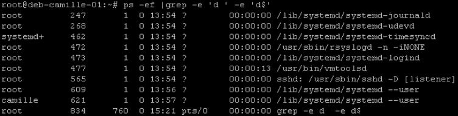

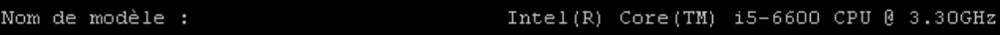
Transcription des commandes et informations utiles visibles
Nom de modèle : Intel(R) Core(TM) i5-6600 CPU @ 3.30GHz
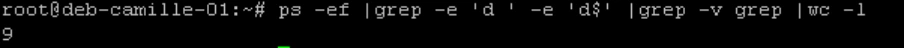
Transcription des commandes et informations utiles visibles
ps -ef | grep -e 'd ' -e 'd$' | grep -v grep | wc -l
9
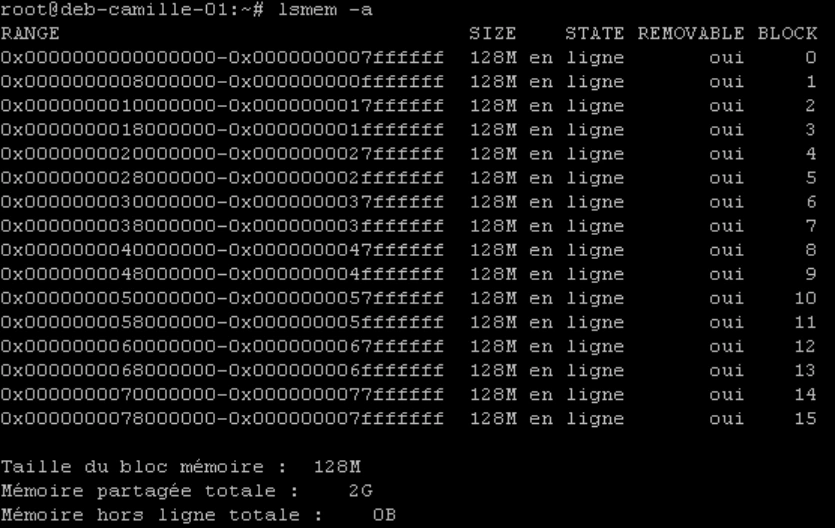
II. Intervention sur les processus
- Ouvrez une session SSH avec le login utilisateur (pas le compte root)
- Lister tous les processus relatifs à votre login de façon détaillée ps -fux est une des méthodes pour lister tous les processus de l'utilisateur. Il en existe plusieurs autres avec ps.
- Lister dans un fichier tous les processus correspondant aux connexions Putty
Un classique enchainement de ps et grep avant de transférerle résultat dans un fichier
- Arrêter un processus lancé
- Lancer une seconde session Putty et ouvrir une session avec votre login utilisateur
- Repérer le n° de processus (PID) relatif au shell de cette seconde session Putty ps sans options ni arguments affiche, entre autre, le processus du shell actuel et son PID, ici 954
- Depuis votre 1ere session, tenter d'arrêter votre second shell (avec le signal par défaut)
La commande kill lancée sans argument via la première session n'arrête pas la session.
- Depuis votre 1ere session, arrêter définitivement votre second shell (avec le signal adapté)
En ajoutant l'option forçant le signal 1 (SIGHUP) la session est coupée

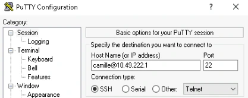

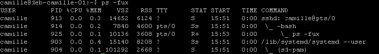

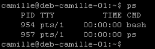

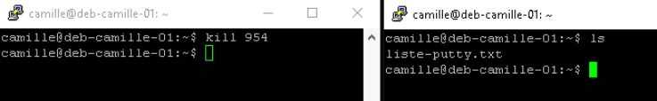
Transcription des commandes et informations utiles visibles
kill 954
Transcription des commandes et informations utiles visibles
ls
liste-putty.txt
kill -9 954
Transcription des commandes visibles
ps -ef | grep sshd | grep -v grep > liste-putty.txtAutre proposition :
1. Ouvrir la 2e session PuTTY et se connecter sous votre même compte. 2. Dans la 2e session, repérer le PID du shell :
- Exécuter : ps -o pid,tty,cmd -u (whoami)−−no−headers∣grep"(tty)" ou plus simplement : ps -o pid= -p $ # affiche le PID du shell courant 3. Depuis la 1re session, envoyer le signal par défaut (SIGTERM) au PID trouvé :
- Commande : kill
- Effet : demande poliment au processus de se terminer. Le shell peut ignorer ou intercepter SIGTERM (ex : shell interactif). Vérifier si le processus a disparu : ps -p && echo "toujours actif" || echo "terminé" 4. Si le shell ne se termine pas, envoyer SIGKILL pour forcer l’arrêt :
- Commande : kill -9 ou kill -KILL
- Effet : terminaison immédiate et non interceptable. Vérifier la disparition : ps -p || echo "terminé définitivement"
Remarques pratiques :
- Préférez toujours SIGTERM (kill) puis, si nécessaire, SIGKILL (kill -9).
- Pour éviter d’envoyer les signaux au mauvais processus, vérifiez le PID et le tty (ps -o pid,tty,cmd). Exemple de vérification complète depuis la 1re session : ps -u $(whoami) -o pid,tty,cmd --no-headers | grep pts/1
- Ne tuez pas de processus système ni un shell que vous n’avez pas prévu d’interrompre.
Référence du document : 1hsueaoXEYZ7RJ-cYbRInc8_XFTUvXBVY · SHA-256 c8a88d1121b5649c…
Complément IA / externe au cours — fiche pédagogique du portail
Cette fiche contient une reformulation et des aides d’apprentissage rédigées par IA. Elle est distincte de la transcription des documents du Drive et ne la remplace pas. Les schémas de synthèse de cette fiche sont des illustrations IA / externes au cours, sauf les captures explicitement attribuées à un document source.
Cours optimisé — reformulation pédagogique du support et des TP associés. Les exemples du parcours conservent leur contexte Debian 11 ; les corrections et actualisations sont identifiées comme compléments externes. Les transcriptions intégrales se consultent dans l’onglet Original.
Une maintenance fondée sur l’observation¶
Le support distingue observation proactive et réaction à un incident. Une intervention se prépare en identifiant le système, la charge, les processus, les montages et les messages utiles. Automatiser une tâche n’élimine pas la nécessité de contrôler son résultat et la place prise par ses journaux.
Journal systemd¶
systemctl status service donne un état et quelques lignes récentes. journalctl permet des recherches plus complètes dans les messages effectivement conservés. Les journaux peuvent contenir les sorties de services, des messages du noyau et d’autres événements : tous les programmes n’y envoient pas nécessairement toute leur activité.
| Besoin | Commande du parcours |
|---|---|
| Lire le journal accessible | journalctl |
| Suivre les nouvelles entrées | journalctl -f |
| Filtrer un service | journalctl -u cron.service |
| Filtrer un PID | journalctl _PID=1 |
| Filtrer un programme | journalctl /usr/sbin/sshd |
| Erreurs et niveaux plus graves | journalctl -p err |
| Messages du noyau | journalctl -k |
Les priorités vont de emerg, alert, crit, err, warning, notice, info à debug. Le filtre de priorité ordinaire inclut les niveaux plus graves ; ce n’est pas toujours une égalité stricte. Combiner unité, date ou suivi réduit le bruit. Le complément journalctl -b limite au démarrage courant ; un PID peut être réutilisé, il faut donc contextualiser sa période.
Rsyslog : facility, priorité, action¶
La source présente rsyslog associé à journald dans son environnement Debian historique. Une règle choisit une origine logique (facility), un seuil de priorité et une destination. Exemples de facilities : auth, authpriv, daemon, kern, mail, user et local0 à local7. * sélectionne toutes les facilities ; none sert à une exclusion dans les sélecteurs.
auth,authpriv.* /var/log/auth.log
*.*;auth,authpriv.none -/var/log/syslog
daemon.* -/var/log/daemon.log
Le tiret devant la destination relève du comportement de synchronisation des écritures, pas de l’activation de la règle. Les fichiers réels dépendent du paquet installé et des règles actives. Configurer /etc/rsyslog.conf ou une entrée locale dédiée, puis valider la syntaxe et le fonctionnement.
logger permet de générer un événement contrôlé. Dans le TP, créer les répertoires /adm et /adm/logs, extraire les ouvertures de sessions vers /adm/sessions.txt, rechercher les informations noyau de sda, orienter cron vers /adm/logs/cron.log et les avertissements vers /adm/logs/warnings.log. Les mots opened et CRON des filtres source correspondent à ses exemples de messages ; ils ne définissent pas à eux seuls toutes les connexions humaines.
Durée de conservation et taille¶
Le fichier de configuration journald est /etc/systemd/journald.conf, avec des possibilités de fragments de configuration selon la version. Le support explique le stockage volatil dans /run/log/journal et le stockage durable dans /var/log/journal. Examiner journalctl --disk-usage avant d’ajuster les plafonds. SystemMaxUse et SystemMaxFileSize concernent respectivement l’espace et la taille des fichiers de journal persistants.
Correction externe — persistance et services
Journald n’est pas condamné à perdre ses messages au redémarrage : cela dépend de Storage= et de l’environnement. En mode auto, la présence de /var/log/journal intervient dans ce choix. Le chemin est journal, pas journald. Les valeurs par défaut dépendent aussi de la version/configuration. systemctl disable rsyslog ne stoppe pas le service courant et ne doit pas être présenté comme nécessaire à la persistance. Référence : systemd-journald.service.
Rotation des fichiers texte¶
Logrotate traite des fichiers selon des règles : période, nombre de rotations, compression et création du fichier suivant. Le support donne un journal Squid avec daily, compress, delaycompress, rotate 366 et create 640. delaycompress reporte la compression de l’archive la plus récente ; le service doit continuer à écrire dans le bon fichier après rotation. L’exécution peut relever de cron ou d’un timer selon l’installation ; examiner le système réel plutôt que supposer une tâche quotidienne unique universelle.
Planification utilisateur¶
crontab -e édite les tâches de l’utilisateur, crontab -l les relit. Une ligne de tâche possède cinq champs temporels, puis la commande. Les bornes sont minute 0–59, heure 0–23, jour du mois 1–31, mois 1–12 et jour de semaine 0–7, où 0 et 7 désignent dimanche.
| Syntaxe | Signification |
|---|---|
1,3,5 |
Liste de valeurs |
10-20 |
Intervalle |
* |
Toutes les valeurs du champ |
*/2 |
Pas à partir du début de la plage du champ |
Cette tâche s’exécute le lundi à 5 h. */2 dans les mois vise janvier, mars, mai, juillet, septembre et novembre : ce n’est pas « deux mois après la dernière exécution ». Le calendrier, le fuseau et les changements d’heure comptent.
Planification système et anacron¶
/etc/crontab et les tables système de /etc/cron.d ajoutent un champ utilisateur entre les dates et la commande. Il ne faut pas ajouter ce champ dans une crontab utilisateur. Les répertoires cron.hourly/daily/weekly/monthly accueillent des scripts exécutés selon les mécanismes configurés. Anacron peut rattraper certaines tâches périodiques manquées lorsque la machine était arrêtée ; il ne garantit pas le rattrapage de toute ligne cron arbitraire.
Complément externe : utiliser des chemins absolus, prévoir l’environnement réduit et traiter les sorties/erreurs. Lorsque jour du mois et jour de semaine sont tous deux restreints, la sémantique cron classique les combine par « ou ». Le caractère % possède aussi une signification particulière dans la commande. Référence : crontab(5).
Le TP de planification utilise François : archive du home les jours ouvrables à 9 h 15, compression le samedi à 10 h puis création d’une nouvelle archive, et relevé détaillé des processus toutes les trente minutes le mardi dans /var/log/procstatus.log. Le TP renvoie au dépôt « atelier 10 » alors que l’arborescence depot apparaît dans le TP permissions du module 11 : confirmer son chemin et ses droits avant la tâche.
Inventaire et performances¶
| Information | Outils étudiés |
|---|---|
| Version Debian et noyau | cat /etc/debian_version, uname -a |
| CPU, PCI, USB | lscpu, lspci, lsusb |
| Stockage | fdisk, pvs/vgs/lvs, lsblk, blkid, findmnt, df |
| Taille d’arborescence et type de fichier | du -sh, ls -lh, file |
| Fichiers ouverts | lsof |
| Processus et charge | ps -ef, top, htop ou glances si installés |
| Mémoire | free -h |
La source écrit file /vin/bash : utiliser file /bin/bash. lsof /root ne signifie pas automatiquement tous les descendants ; l’option récursive appropriée et le périmètre doivent être choisis. Dans free, la colonne available estime ce qui est mobilisable sans swap ; la seule colonne free ne représente pas toute la mémoire utilisable. La charge moyenne n’est pas un simple pourcentage CPU.
TP — agir sur un processus ciblé¶
Ouvrir deux sessions SSH ordinaires et relever leurs terminaux et PID avec ps. Le serveur voit sshd et le shell distant, pas nécessairement un processus nommé PuTTY : PuTTY s’exécute sur le client Windows. Le nom finissant par d est un exercice de filtrage, pas une définition fiable de « démon ».
Envoyer d’abord SIGTERM au PID identifié de la deuxième session, puis observer. Si le scénario exige sa terminaison et que le processus n’a pas terminé, SIGKILL est non interceptable ; il empêche le nettoyage normal. Ne pas confondre le PID du shell, celui de sshd et celui du terminal client. Les signaux et vérifications précis restent dans le corrigé associé.
Schéma explicatif — complément pédagogique¶
Illustration IA / externe au cours — schéma pédagogique de synthèse.
Autoévaluation¶
- Une crontab utilisateur contient-elle un champ utilisateur ?
- Comment vérifier que cron a émis un événement et qu’une règle l’a bien écrit ?
- Pourquoi la colonne free n’est-elle pas seule suffisante ?
- PuTTY tourne-t-il sur le serveur Debian de ce scénario ?
Réponses
- Non ; le champ supplémentaire concerne les tables système.
- Générer un message identifié avec logger puis examiner les destinations attendues.
- Des caches sont récupérables ; available apporte une estimation différente.
- Non ; le serveur voit notamment sshd et le shell distant.
Pour travailler ce module¶
M12 — Maintenance d’un système en production
20 questions
Teste tes connaissances sur ce module.